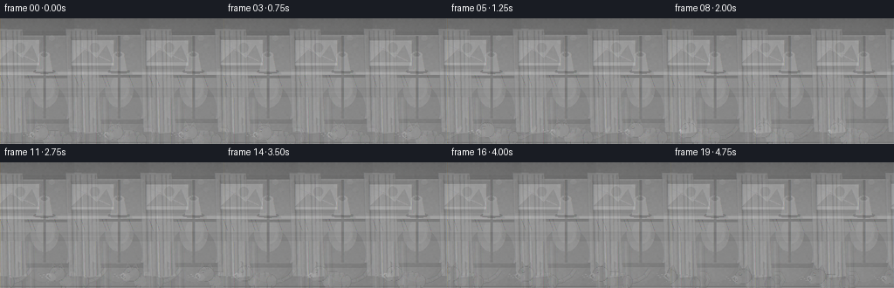
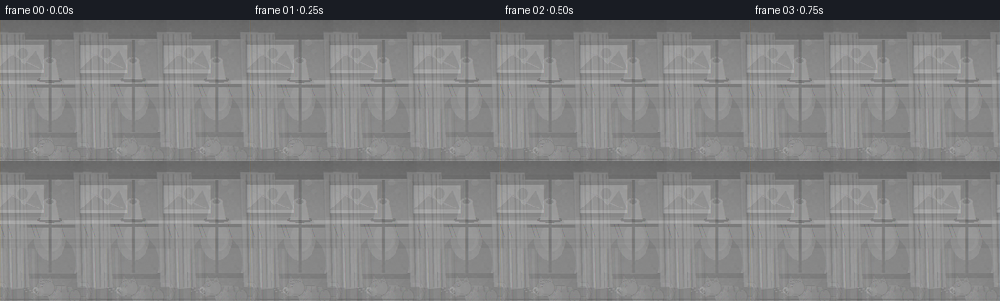
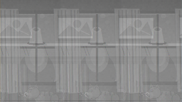
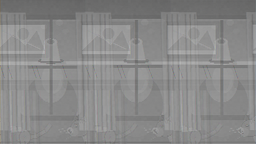
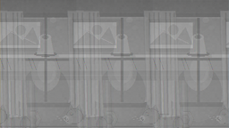
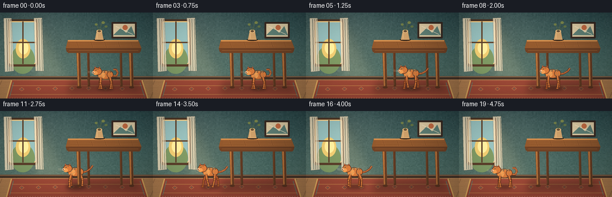
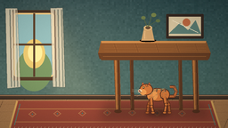
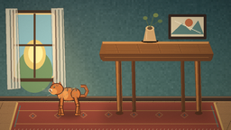

CODING AGENTS AS PIXEL WORLD MODELS
traex/DeepSeek-V4.1-Flash · dynamic_spatial_relationship_0015
点击播放 · 原生 RGB 像素
逐轮保存的候选
回放视频、检查图与代码变化。
每份候选均可单独播放。实际图片检查记录在下方工具轨迹中。
候选 01播放与检查图
点击播放 · 原生 RGB 像素


展开代码变化
--- 上一保存版本
+++ 本次保存版本
@@ -0,0 +1,463 @@
+from pathlib import Path
+import math
+
+import numpy as np
+from PIL import Image, ImageDraw, ImageFilter
+
+import artifact_io
+
+
+ROOT = Path(__file__).resolve().parent
+W, H = 256, 144
+SS = 4
+CW, CH = W * SS, H * SS
+FRAMES = 20
+FPS = 4.0
+
+
+def mix(a, b, t):
+ return tuple(round(a[i] * (1.0 - t) + b[i] * t) for i in range(3))
+
+
+def smoothstep(t):
+ t = max(0.0, min(1.0, t))
+ return t * t * (3.0 - 2.0 * t)
+
+
+def rgba(color, alpha):
+ return tuple(color) + (alpha,)
+
+
+def vertical_gradient(top, bottom):
+ t = np.linspace(0.0, 1.0, CH, dtype=np.float32)[:, None, None]
+ top_arr = np.asarray(top, dtype=np.float32)[None, None, :]
+ bottom_arr = np.asarray(bottom, dtype=np.float32)[None, None, :]
+ arr = top_arr * (1.0 - t) + bottom_arr * t
+ return np.repeat(arr, CW, axis=1)
+
+
+def make_wall():
+ arr = vertical_gradient((46, 75, 77), (83, 112, 101))
+ rng = np.random.default_rng(17)
+ noise = rng.normal(0.0, 3.2, (CH // 8, CW // 8, 1)).astype(np.float32)
+ noise = np.repeat(np.repeat(noise, 8, axis=0), 8, axis=1)
+ arr += noise
+ x = np.linspace(-1.0, 1.0, CW, dtype=np.float32)[None, :, None]
+ arr += np.clip(12.0 * (1.0 - np.abs(x + 0.48)), 0.0, 12.0)
+ return np.clip(arr, 0, 255).astype(np.uint8)
+
+
+def make_floor():
+ arr = vertical_gradient((118, 81, 55), (174, 126, 80))
+ rng = np.random.default_rng(31)
+ noise = rng.normal(0.0, 5.0, (CH, CW, 1)).astype(np.float32)
+ arr += noise
+ return np.clip(arr, 0, 255).astype(np.uint8)
+
+
+def draw_soft_polygon(layer, points, color, blur=18):
+ shadow = Image.new("RGBA", layer.size, (0, 0, 0, 0))
+ ImageDraw.Draw(shadow).polygon(points, fill=color)
+ shadow = shadow.filter(ImageFilter.GaussianBlur(blur))
+ layer.alpha_composite(shadow)
+
+
+def draw_window(layer):
+ d = ImageDraw.Draw(layer, "RGBA")
+
+ # Warm light bloom on the wall beside the window.
+ beam = Image.new("RGBA", layer.size, (0, 0, 0, 0))
+ bd = ImageDraw.Draw(beam, "RGBA")
+ bd.polygon([(65, 55), (265, 55), (500, 470), (245, 520)], fill=(255, 220, 150, 27))
+ beam = beam.filter(ImageFilter.GaussianBlur(42))
+ layer.alpha_composite(beam)
+
+ frame = (48, 45, 255, 358)
+ d.rounded_rectangle(frame, radius=18, fill=(65, 50, 39, 255))
+ d.rounded_rectangle((61, 58, 242, 345), radius=12, fill=(245, 205, 135, 255))
+
+ # Cool sky at the top and sunlit garden below.
+ sky = Image.new("RGBA", layer.size, (0, 0, 0, 0))
+ sd = ImageDraw.Draw(sky, "RGBA")
+ sd.rounded_rectangle((68, 65, 235, 338), radius=8, fill=(138, 183, 184, 255))
+ sd.ellipse((72, 220, 232, 410), fill=(116, 145, 96, 255))
+ sd.ellipse((105, 176, 202, 307), fill=(225, 195, 111, 255))
+ sd.ellipse((125, 192, 189, 280), fill=(255, 229, 154, 255))
+ layer.alpha_composite(sky)
+
+ # Window muntins.
+ d = ImageDraw.Draw(layer, "RGBA")
+ d.rectangle((149, 60, 157, 344), fill=(84, 61, 43, 255))
+ d.rectangle((62, 196, 241, 204), fill=(84, 61, 43, 255))
+ d.rectangle((55, 347, 248, 361), fill=(80, 57, 40, 255))
+ d.line((55, 55, 55, 348), fill=(238, 209, 159, 110), width=4)
+
+ # A light linen curtain and its folds.
+ curtain = Image.new("RGBA", layer.size, (0, 0, 0, 0))
+ cd = ImageDraw.Draw(curtain, "RGBA")
+ cd.polygon([(24, 37), (77, 37), (91, 392), (32, 398)], fill=(224, 211, 181, 220))
+ cd.polygon([(226, 36), (281, 34), (292, 393), (237, 391)], fill=(224, 211, 181, 210))
+ for x in (44, 58, 72, 245, 260, 276):
+ cd.line((x, 43, x + 7, 390), fill=(129, 116, 96, 70), width=3)
+ curtain = curtain.filter(ImageFilter.GaussianBlur(1.2))
+ layer.alpha_composite(curtain)
+
+
+def draw_wall_art(layer):
+ d = ImageDraw.Draw(layer, "RGBA")
+ d.rounded_rectangle((746, 63, 914, 173), radius=4, fill=(53, 40, 33, 255))
+ d.rectangle((758, 75, 902, 161), fill=(213, 195, 158, 255))
+ d.polygon([(758, 151), (807, 103), (844, 136), (878, 91), (902, 151)], fill=(91, 123, 113, 255))
+ d.ellipse((820, 83, 854, 117), fill=(188, 104, 65, 255))
+ d.line((773, 91, 889, 146), fill=(240, 225, 192, 115), width=4)
+
+
+def draw_rug(layer):
+ d = ImageDraw.Draw(layer, "RGBA")
+ rug = [(76, 454), (949, 454), (988, 575), (43, 575)]
+ d.polygon(rug, fill=(150, 70, 53, 255))
+ d.line([(76, 454), (43, 575)], fill=(213, 164, 91, 255), width=8)
+ d.line([(949, 454), (988, 575)], fill=(213, 164, 91, 255), width=8)
+ d.line([(89, 468), (64, 563)], fill=(93, 121, 107, 255), width=4)
+ d.line([(936, 468), (966, 563)], fill=(93, 121, 107, 255), width=4)
+ d.line([(81, 490), (949, 490)], fill=(197, 137, 76, 190), width=3)
+ d.line([(68, 548), (966, 548)], fill=(197, 137, 76, 180), width=3)
+
+ # Quiet geometric motifs keep the rug from reading as a flat shape.
+ for x in range(145, 900, 112):
+ y = 510 + int(4 * math.sin(x * 0.05))
+ d.polygon([(x, y - 13), (x + 17, y), (x, y + 13), (x - 17, y)],
+ outline=(217, 172, 102, 135), width=2)
+ d.ellipse((x - 3, y - 3, x + 3, y + 3), fill=(83, 117, 105, 140))
+
+ # Fringe.
+ for x in range(66, 973, 17):
+ d.line((x, 570, x - 6, 585), fill=(218, 190, 142, 175), width=2)
+
+
+def draw_table_static(layer):
+ d = ImageDraw.Draw(layer, "RGBA")
+
+ # Back legs sit behind the cat.
+ for x, shade in ((590, (83, 50, 31, 255)), (808, (88, 54, 32, 255))):
+ d.polygon([(x - 8, 242), (x + 7, 242), (x + 12, 495), (x - 3, 497)], fill=shade)
+ d.line((x - 4, 252, x - 1, 486), fill=(129, 82, 46, 95), width=3)
+
+ # Tabletop, front rail, and a restrained grain.
+ top = [(454, 184), (925, 184), (946, 239), (440, 239)]
+ d.polygon(top, fill=(132, 81, 43, 255))
+ d.polygon([(454, 184), (925, 184), (923, 193), (455, 193)], fill=(196, 133, 73, 255))
+ d.polygon([(440, 239), (946, 239), (939, 264), (447, 264)], fill=(95, 57, 34, 255))
+ d.line((447, 247, 939, 247), fill=(203, 142, 82, 135), width=3)
+ for y in (204, 218, 229):
+ d.line((470, y, 924, y - 3), fill=(218, 157, 91, 48), width=2)
+ for x in (512, 607, 699, 790, 875):
+ d.line((x, 196, x + 13, 234), fill=(78, 48, 30, 42), width=2)
+
+ # A small ceramic vase and dry stems.
+ d.ellipse((626, 174, 702, 190), fill=(58, 38, 29, 85))
+ d.polygon([(647, 124), (681, 124), (692, 181), (635, 181)], fill=(196, 154, 103, 255))
+ d.ellipse((645, 114, 683, 136), fill=(214, 175, 119, 255))
+ d.ellipse((653, 118, 675, 131), fill=(99, 73, 52, 255))
+ d.line((661, 121, 642, 73), fill=(84, 100, 62, 255), width=3)
+ d.line((664, 121, 684, 64), fill=(84, 100, 62, 255), width=3)
+ d.line((660, 121, 707, 91), fill=(84, 100, 62, 255), width=2)
+ d.ellipse((634, 72, 653, 87), fill=(107, 122, 71, 255))
+ d.ellipse((679, 58, 701, 76), fill=(117, 129, 73, 255))
+ d.ellipse((699, 86, 719, 100), fill=(93, 111, 67, 255))
+ d.line((648, 138, 650, 174), fill=(241, 203, 151, 105), width=3)
+
+
+def draw_front_table(layer):
+ d = ImageDraw.Draw(layer, "RGBA")
+ # Near legs are drawn after the cat, so it visibly passes behind them.
+ for x, edge in ((524, (68, 40, 27, 255)), (875, (65, 38, 26, 255))):
+ d.polygon([(x - 14, 247), (x + 12, 247), (x + 19, 505), (x - 4, 507)], fill=(115, 69, 38, 255))
+ d.polygon([(x - 10, 250), (x - 2, 250), (x + 3, 498), (x - 2, 499)], fill=(176, 111, 57, 255))
+ d.line((x + 7, 256, x + 12, 496), fill=edge, width=4)
+ d.ellipse((x - 11, 493, x + 22, 508), fill=(83, 48, 30, 255))
+
+ # Front rail, narrow enough to preserve the open space beneath.
+ d.polygon([(448, 245), (940, 245), (934, 270), (454, 270)], fill=(102, 61, 35, 255))
+ d.line((462, 253, 925, 253), fill=(196, 130, 69, 100), width=2)
+
+
+def cat_x(frame):
+ # Hold under the table, then accelerate and decelerate into the left side.
+ if frame <= 3:
+ return 706.0
+ if frame == 4:
+ return 710.0
+ t = smoothstep((frame - 4) / 14.0)
+ return 710.0 - 405.0 * t
+
+
+def cat_pose(frame):
+ x = cat_x(frame)
+ running = 5 <= frame <= 18
+ crouched = frame == 4
+ if running:
+ distance = 710.0 - x
+ phase = distance / 78.0 * math.tau
+ bob = 3.5 * abs(math.sin(phase))
+ body_y = 409.0 - bob
+ else:
+ phase = 0.0
+ body_y = 416.0
+ if crouched:
+ body_y = 425.0
+ phase = 0.35
+ return x, body_y, phase, running, crouched
+
+
+def draw_tail(d, cx, cy, phase, running):
+ if running:
+ sway = 8.0 * math.sin(phase + 0.7)
+ points = [
+ (cx + 42, cy + 5),
+ (cx + 72, cy - 2 + sway * 0.2),
+ (cx + 98, cy - 18 + sway * 0.4),
+ (cx + 113, cy - 39 + sway * 0.5),
+ ]
+ else:
+ points = [
+ (cx + 43, cy + 8),
+ (cx + 72, cy + 8),
+ (cx + 82, cy - 13),
+ (cx + 72, cy - 34),
+ (cx + 53, cy - 35),
+ ]
+ d.line(points, fill=(104, 48, 26, 255), width=16, joint="curve")
+ d.line(points, fill=(196, 101, 48, 255), width=11, joint="curve")
+ d.line([(x - 2, y - 2) for x, y in points], fill=(232, 145, 76, 105), width=3, joint="curve")
+ for i in range(1, len(points) - 1):
+ x, y = points[i]
+ d.line((x - 3, y - 6, x + 3, y + 6), fill=(117, 53, 28, 175), width=3)
+
+
+def leg_points(hip, foot, front, swing, lift):
+ hx, hy = hip
+ fx, fy = foot[0] + swing, foot[1] - lift
+ if front:
+ knee = ((hx + fx) * 0.5 - 4 + swing * 0.22, (hy + fy) * 0.5 + 5)
+ else:
+ knee = ((hx + fx) * 0.5 + 7 + swing * 0.15, (hy + fy) * 0.5 - 3)
+ return (hx, hy), knee, (fx, fy)
+
+
+def draw_leg(d, hip, foot, front, swing, lift, color, outline):
+ p0, p1, p2 = leg_points(hip, foot, front, swing, lift)
+ d.line((p0, p1), fill=outline, width=17)
+ d.line((p1, p2), fill=outline, width=14)
+ d.line((p0, p1), fill=color, width=11)
+ d.line((p1, p2), fill=color, width=8)
+ d.ellipse((p1[0] - 7, p1[1] - 7, p1[0] + 7, p1[1] + 7), fill=color, outline=outline, width=2)
+ d.ellipse((p2[0] - 9, p2[1] - 5, p2[0] + 8, p2[1] + 6), fill=color, outline=outline, width=2)
+
+
+def draw_cat(layer, cx, cy, phase, running, crouched):
+ cat = Image.new("RGBA", layer.size, (0, 0, 0, 0))
+ d = ImageDraw.Draw(cat, "RGBA")
+ base = (205, 116, 56, 255)
+ light = (231, 151, 79, 255)
+ dark = (119, 55, 29, 255)
+ outline = (76, 39, 26, 255)
+ floor_y = 506
+
+ draw_tail(d, cx, cy, phase, running)
+
+ if running:
+ swing = 20.0 * math.sin(phase)
+ lift_near = 10.0 * max(0.0, math.cos(phase))
+ lift_far = 10.0 * max(0.0, math.cos(phase + math.pi))
+ draw_leg(d, (cx - 28, cy + 15), (cx - 40, floor_y), True,
+ -swing * 0.75, lift_far, (170, 86, 42, 255), (93, 47, 28, 255))
+ draw_leg(d, (cx + 27, cy + 14), (cx + 37, floor_y), False,
+ swing * 0.9, lift_near, (168, 84, 40, 255), (92, 46, 28, 255))
+ else:
+ bend = 8 if crouched else 0
+ draw_leg(d, (cx - 29, cy + 14), (cx - 41, floor_y), True,
+ -bend, 0, (173, 91, 44, 255), (93, 47, 28, 255))
+ draw_leg(d, (cx + 27, cy + 13), (cx + 43, floor_y), False,
+ bend, 0, (173, 91, 44, 255), (93, 47, 28, 255))
+
+ # Torso and haunch.
+ body = [
+ (cx - 50, cy - 3), (cx - 44, cy - 22), (cx - 24, cy - 31),
+ (cx + 4, cy - 31), (cx + 30, cy - 24), (cx + 49, cy - 8),
+ (cx + 50, cy + 10), (cx + 34, cy + 27), (cx + 7, cy + 31),
+ (cx - 22, cy + 28), (cx - 43, cy + 18),
+ ]
+ d.polygon(body, fill=base, outline=outline)
+ d.ellipse((cx + 19, cy - 20, cx + 54, cy + 25), fill=base, outline=outline, width=2)
+ d.ellipse((cx - 45, cy - 18, cx - 5, cy + 24), fill=light)
+
+ # Shoulder/back highlights and tabby bands.
+ d.line((cx - 31, cy - 22, cx + 27, cy - 25), fill=(245, 173, 91, 150), width=5)
+ for off, tilt in ((-21, -5), (-5, -2), (13, 2), (29, 5)):
+ d.line((cx + off, cy - 28, cx + off + tilt, cy - 13),
+ fill=(128, 61, 31, 150), width=5)
+ d.line((cx + 11, cy + 13, cx + 31, cy + 18), fill=(151, 72, 34, 105), width=4)
+
+ # Near-side legs.
+ if running:
+ draw_leg(d, (cx - 31, cy + 17), (cx - 30, floor_y), True,
+ swing, lift_near, base, outline)
+ draw_leg(d, (cx + 29, cy + 15), (cx + 32, floor_y), False,
+ -swing, lift_far, base, outline)
+ else:
+ bend = 5 if crouched else 0
+ draw_leg(d, (cx - 31, cy + 17), (cx - 28, floor_y), True,
+ bend, 0, base, outline)
+ draw_leg(d, (cx + 29, cy + 15), (cx + 34, floor_y), False,
+ -bend, 0, base, outline)
+
+ # Ears behind the face.
+ d.polygon([(cx - 77, cy - 42), (cx - 70, cy - 66), (cx - 55, cy - 45)],
+ fill=base, outline=outline)
+ d.polygon([(cx - 54, cy - 47), (cx - 40, cy - 63), (cx - 30, cy - 39)],
+ fill=base, outline=outline)
+ d.polygon([(cx - 71, cy - 47), (cx - 68, cy - 59), (cx - 59, cy - 47)],
+ fill=(178, 86, 66, 255))
+ d.polygon([(cx - 49, cy - 47), (cx - 41, cy - 57), (cx - 36, cy - 42)],
+ fill=(178, 86, 66, 255))
+
+ # Head, cheek, muzzle, and face.
+ d.ellipse((cx - 83, cy - 50, cx - 27, cy + 2), fill=base, outline=outline, width=2)
+ d.ellipse((cx - 86, cy - 24, cx - 60, cy + 1), fill=light)
+ d.ellipse((cx - 93, cy - 26, cx - 75, cy - 8), fill=(239, 203, 155, 255))
+ d.polygon([(cx - 91, cy - 17), (cx - 84, cy - 22), (cx - 84, cy - 10)],
+ fill=(119, 62, 55, 255))
+ d.line((cx - 84, cy - 11, cx - 76, cy - 8), fill=outline, width=2)
+ d.line((cx - 84, cy - 11, cx - 78, cy - 15), fill=outline, width=2)
+
+ # Amber eye and vertical pupil.
+ eye = [(cx - 72, cy - 31), (cx - 65, cy - 36), (cx - 58, cy - 31),
+ (cx - 65, cy - 27)]
+ d.polygon(eye, fill=(242, 196, 74, 255), outline=(82, 45, 29, 255))
+ d.ellipse((cx - 67, cy - 34, cx - 62, cy - 27), fill=(35, 30, 24, 255))
+ d.ellipse((cx - 66, cy - 33, cx - 64, cy - 30), fill=(255, 249, 222, 255))
+ d.line((cx - 72, cy - 38, cx - 58, cy - 37), fill=(107, 52, 31, 150), width=2)
+
+ # Stripes on the forehead and short whiskers.
+ d.line((cx - 57, cy - 49, cx - 52, cy - 38), fill=(124, 59, 31, 170), width=3)
+ d.line((cx - 49, cy - 49, cx - 47, cy - 39), fill=(124, 59, 31, 170), width=3)
+ for dy in (-19, -14, -9):
+ d.line((cx - 89, cy + dy, cx - 118, cy + dy - 5),
+ fill=(243, 225, 190, 150), width=1)
+ d.line((cx - 82, cy + 1, cx - 96, cy + 9), fill=(245, 226, 188, 145), width=1)
+
+ # Fine fixed fur strokes give the silhouette some texture without flicker.
+ rng = np.random.default_rng(93)
+ for _ in range(44):
+ px = cx + rng.uniform(-36, 38)
+ py = cy + rng.uniform(-24, 22)
+ d.line((px, py, px - 4, py + 5), fill=(244, 172, 91, 46), width=1)
+
+ layer.alpha_composite(cat)
+
+
+def draw_cat_shadow(layer, cx, cy, running):
+ shadow = Image.new("RGBA", layer.size, (0, 0, 0, 0))
+ sd = ImageDraw.Draw(shadow, "RGBA")
+ length = 132 if running else 108
+ sd.ellipse((cx - length * 0.5, 493, cx + length * 0.5, 521), fill=(38, 27, 20, 105))
+ shadow = shadow.filter(ImageFilter.GaussianBlur(10))
+ layer.alpha_composite(shadow)
+
+
+def draw_dust(layer, cx, cy, phase, running):
+ if not running:
+ return
+ dust = Image.new("RGBA", layer.size, (0, 0, 0, 0))
+ d = ImageDraw.Draw(dust, "RGBA")
+ for i in range(5):
+ x = cx + 18 + i * 18 + 5 * math.sin(phase + i)
+ y = 498 - (i % 2) * 4
+ r = 4 + i * 1.2
+ d.ellipse((x - r, y - r * 0.55, x + r, y + r * 0.55),
+ fill=(208, 172, 123, max(18, 58 - i * 8)))
+ for i in range(3):
+ y = cy + 5 + i * 7
+ d.line((cx + 40, y, cx + 75 + i * 8, y + 2),
+ fill=(246, 207, 145, 30), width=2)
+ dust = dust.filter(ImageFilter.GaussianBlur(3))
+ layer.alpha_composite(dust)
+
+
+def apply_light_and_grain(image, frame):
+ arr = np.asarray(image, dtype=np.float32).copy()
+ yy, xx = np.mgrid[0:CH, 0:CW].astype(np.float32)
+ nx = (xx - CW * 0.43) / (CW * 0.64)
+ ny = (yy - CH * 0.48) / (CH * 0.68)
+ vignette = np.clip(1.08 - 0.27 * (nx * nx + ny * ny), 0.73, 1.06)
+ warm = np.clip(1.0 - np.sqrt(((xx - 250) / 620) ** 2 + ((yy - 155) / 400) ** 2), 0.0, 1.0)
+ arr[..., 0] += 12.0 * warm
+ arr[..., 1] += 5.0 * warm
+ arr *= vignette[..., None]
+
+ rng = np.random.default_rng(1000 + frame)
+ grain = rng.normal(0.0, 1.45, (CH, CW, 1)).astype(np.float32)
+ arr += grain
+ return Image.fromarray(np.clip(arr, 0, 255).astype(np.uint8), "RGB")
+
+
+def build_background():
+ wall = make_wall()
+ floor = make_floor()
+ arr = np.empty((CH, CW, 3), dtype=np.uint8)
+ arr[:444] = wall[:444]
+ arr[444:] = floor[444:]
+ image = Image.fromarray(arr, "RGB").convert("RGBA")
+
+ draw_window(image)
+ draw_wall_art(image)
+
+ d = ImageDraw.Draw(image, "RGBA")
+ # Baseboard.
+ d.rectangle((0, 426, CW, 447), fill=(72, 54, 42, 255))
+ d.line((0, 429, CW, 429), fill=(163, 125, 91, 190), width=4)
+ d.line((0, 444, CW, 444), fill=(44, 34, 29, 180), width=4)
+
+ # Floor board seams and subtle sheen.
+ for x0 in range(-80, CW + 200, 95):
+ d.line((x0, 447, x0 - 55, CH), fill=(83, 55, 38, 65), width=3)
+ for y in (468, 502, 544):
+ d.line((0, y, CW, y + 3), fill=(68, 45, 33, 44), width=2)
+ d.line((0, 451, CW, 451), fill=(235, 186, 123, 55), width=3)
+
+ draw_rug(image)
+
+ # Soft shade under the table.
+ draw_soft_polygon(
+ image,
+ [(475, 467), (915, 462), (942, 528), (450, 538)],
+ (45, 31, 23, 88),
+ blur=22,
+ )
+ draw_table_static(image)
+ return image
+
+
+def main():
+ background = build_background()
+ frames = []
+ for frame in range(FRAMES):
+ image = background.copy()
+ cx, cy, phase, running, crouched = cat_pose(frame)
+ draw_cat_shadow(image, cx, cy, running)
+ draw_cat(image, cx, cy, phase, running, crouched)
+ draw_front_table(image)
+ draw_dust(image, cx, cy, phase, running)
+
+ image = apply_light_and_grain(image, frame)
+ image = image.resize((W, H), Image.Resampling.LANCZOS)
+ frames.append(np.asarray(image, dtype=np.uint8))
+
+ frames = np.stack(frames, axis=0)
+ artifact_io.save(frames, ROOT)
+ print(f"Wrote {len(frames)} frames to {ROOT}")
+
+
+if __name__ == "__main__":
+ main()
候选 02播放与检查图
点击播放 · 原生 RGB 像素

展开代码变化
--- 上一保存版本
+++ 本次保存版本
@@ -399,7 +399,7 @@
rng = np.random.default_rng(1000 + frame)
grain = rng.normal(0.0, 1.45, (CH, CW, 1)).astype(np.float32)
arr += grain
- return Image.fromarray(np.clip(arr, 0, 255).astype(np.uint8), "RGB")
+ return Image.fromarray(np.clip(arr, 0, 255).astype(np.uint8))
def build_background():
@@ -408,7 +408,7 @@
arr = np.empty((CH, CW, 3), dtype=np.uint8)
arr[:444] = wall[:444]
arr[444:] = floor[444:]
- image = Image.fromarray(arr, "RGB").convert("RGBA")
+ image = Image.fromarray(arr).convert("RGBA")
draw_window(image)
draw_wall_art(image)
候选 03播放与检查图
点击播放 · 原生 RGB 像素

展开代码变化
--- 上一保存版本
+++ 本次保存版本
@@ -227,9 +227,9 @@
(cx + 72, cy - 34),
(cx + 53, cy - 35),
]
- d.line(points, fill=(104, 48, 26, 255), width=16, joint="curve")
- d.line(points, fill=(196, 101, 48, 255), width=11, joint="curve")
- d.line([(x - 2, y - 2) for x, y in points], fill=(232, 145, 76, 105), width=3, joint="curve")
+ d.line(points, fill=(91, 44, 27, 255), width=14, joint="curve")
+ d.line(points, fill=(190, 98, 47, 255), width=9, joint="curve")
+ d.line([(x - 2, y - 2) for x, y in points], fill=(232, 145, 76, 90), width=2, joint="curve")
for i in range(1, len(points) - 1):
x, y = points[i]
d.line((x - 3, y - 6, x + 3, y + 6), fill=(117, 53, 28, 175), width=3)
@@ -281,16 +281,13 @@
draw_leg(d, (cx + 27, cy + 13), (cx + 43, floor_y), False,
bend, 0, (173, 91, 44, 255), (93, 47, 28, 255))
- # Torso and haunch.
- body = [
- (cx - 50, cy - 3), (cx - 44, cy - 22), (cx - 24, cy - 31),
- (cx + 4, cy - 31), (cx + 30, cy - 24), (cx + 49, cy - 8),
- (cx + 50, cy + 10), (cx + 34, cy + 27), (cx + 7, cy + 31),
- (cx - 22, cy + 28), (cx - 43, cy + 18),
- ]
- d.polygon(body, fill=base, outline=outline)
- d.ellipse((cx + 19, cy - 20, cx + 54, cy + 25), fill=base, outline=outline, width=2)
- d.ellipse((cx - 45, cy - 18, cx - 5, cy + 24), fill=light)
+ # Smooth torso and rounded haunch.
+ d.ellipse((cx - 53, cy - 29, cx + 47, cy + 31), fill=outline)
+ d.ellipse((cx - 50, cy - 26, cx + 44, cy + 28), fill=base)
+ d.ellipse((cx + 9, cy - 24, cx + 52, cy + 24), fill=outline)
+ d.ellipse((cx + 12, cy - 21, cx + 49, cy + 21), fill=base)
+ d.ellipse((cx - 44, cy - 18, cx - 3, cy + 25), fill=light)
+ d.ellipse((cx - 49, cy - 12, cx - 25, cy + 22), fill=(225, 137, 69, 255))
# Shoulder/back highlights and tabby bands.
d.line((cx - 31, cy - 22, cx + 27, cy - 25), fill=(245, 173, 91, 150), width=5)
@@ -312,36 +309,37 @@
draw_leg(d, (cx + 29, cy + 15), (cx + 34, floor_y), False,
-bend, 0, base, outline)
- # Ears behind the face.
- d.polygon([(cx - 77, cy - 42), (cx - 70, cy - 66), (cx - 55, cy - 45)],
+ # Smaller, rounded cat ears sit behind the face.
+ d.polygon([(cx - 77, cy - 38), (cx - 70, cy - 56), (cx - 56, cy - 39)],
fill=base, outline=outline)
- d.polygon([(cx - 54, cy - 47), (cx - 40, cy - 63), (cx - 30, cy - 39)],
+ d.polygon([(cx - 51, cy - 40), (cx - 40, cy - 55), (cx - 29, cy - 35)],
fill=base, outline=outline)
- d.polygon([(cx - 71, cy - 47), (cx - 68, cy - 59), (cx - 59, cy - 47)],
+ d.polygon([(cx - 72, cy - 42), (cx - 69, cy - 51), (cx - 61, cy - 42)],
fill=(178, 86, 66, 255))
- d.polygon([(cx - 49, cy - 47), (cx - 41, cy - 57), (cx - 36, cy - 42)],
+ d.polygon([(cx - 47, cy - 42), (cx - 40, cy - 51), (cx - 35, cy - 39)],
fill=(178, 86, 66, 255))
# Head, cheek, muzzle, and face.
- d.ellipse((cx - 83, cy - 50, cx - 27, cy + 2), fill=base, outline=outline, width=2)
- d.ellipse((cx - 86, cy - 24, cx - 60, cy + 1), fill=light)
- d.ellipse((cx - 93, cy - 26, cx - 75, cy - 8), fill=(239, 203, 155, 255))
- d.polygon([(cx - 91, cy - 17), (cx - 84, cy - 22), (cx - 84, cy - 10)],
+ d.ellipse((cx - 84, cy - 48, cx - 24, cy + 3), fill=outline)
+ d.ellipse((cx - 81, cy - 45, cx - 27, cy), fill=base)
+ d.ellipse((cx - 82, cy - 23, cx - 53, cy + 2), fill=light)
+ d.ellipse((cx - 90, cy - 24, cx - 74, cy - 8), fill=(239, 203, 155, 255))
+ d.polygon([(cx - 89, cy - 17), (cx - 82, cy - 21), (cx - 82, cy - 11)],
fill=(119, 62, 55, 255))
- d.line((cx - 84, cy - 11, cx - 76, cy - 8), fill=outline, width=2)
- d.line((cx - 84, cy - 11, cx - 78, cy - 15), fill=outline, width=2)
+ d.line((cx - 82, cy - 11, cx - 74, cy - 8), fill=outline, width=2)
+ d.line((cx - 82, cy - 11, cx - 77, cy - 15), fill=outline, width=2)
# Amber eye and vertical pupil.
- eye = [(cx - 72, cy - 31), (cx - 65, cy - 36), (cx - 58, cy - 31),
- (cx - 65, cy - 27)]
+ eye = [(cx - 72, cy - 31), (cx - 66, cy - 35), (cx - 60, cy - 31),
+ (cx - 66, cy - 27)]
d.polygon(eye, fill=(242, 196, 74, 255), outline=(82, 45, 29, 255))
- d.ellipse((cx - 67, cy - 34, cx - 62, cy - 27), fill=(35, 30, 24, 255))
- d.ellipse((cx - 66, cy - 33, cx - 64, cy - 30), fill=(255, 249, 222, 255))
- d.line((cx - 72, cy - 38, cx - 58, cy - 37), fill=(107, 52, 31, 150), width=2)
+ d.ellipse((cx - 68, cy - 33, cx - 63, cy - 27), fill=(35, 30, 24, 255))
+ d.ellipse((cx - 67, cy - 33, cx - 65, cy - 30), fill=(255, 249, 222, 255))
+ d.line((cx - 72, cy - 37, cx - 60, cy - 36), fill=(107, 52, 31, 150), width=2)
# Stripes on the forehead and short whiskers.
- d.line((cx - 57, cy - 49, cx - 52, cy - 38), fill=(124, 59, 31, 170), width=3)
- d.line((cx - 49, cy - 49, cx - 47, cy - 39), fill=(124, 59, 31, 170), width=3)
+ d.line((cx - 57, cy - 44, cx - 52, cy - 34), fill=(124, 59, 31, 170), width=3)
+ d.line((cx - 49, cy - 44, cx - 47, cy - 35), fill=(124, 59, 31, 170), width=3)
for dy in (-19, -14, -9):
d.line((cx - 89, cy + dy, cx - 118, cy + dy - 5),
fill=(243, 225, 190, 150), width=1)
@@ -452,6 +450,7 @@
image = apply_light_and_grain(image, frame)
image = image.resize((W, H), Image.Resampling.LANCZOS)
+ image = image.convert("RGB")
frames.append(np.asarray(image, dtype=np.uint8))
frames = np.stack(frames, axis=0)
候选 04播放与检查图

可观测工具轨迹
实际执行的命令与返回图片。
命令 1exit 0
/bin/bash -c "pwd && rg --files -g 'prompt.txt' -g 'GENERATION_RULES.md' -g 'task_spec.json' -g '"'!node_modules'"'"
命令 2exit 0
/bin/bash -c 'ls -la'
命令 3exit 0
/bin/bash -c 'cat prompt.txt'
命令 4exit 0
/bin/bash -c 'cat GENERATION_RULES.md'
命令 5exit 0
/bin/bash -c "cat task_spec.json && printf '\\n--- artifact_io.py ---\\n' && sed -n '1,240p' artifact_io.py"
命令 6exit 0
/bin/bash -c 'python generate.py'
命令 7exit 0
/bin/bash -c 'mkdir -p candidate_01 && cp pixels.npz inspection.png transition_check.png candidate_01/ && cp -r frames candidate_01/ && cp index.html candidate_01/'
命令 8exit 0
/bin/bash -c 'rg -n "Image.fromarray|def draw_cat|def cat_pose|def draw_front_table|def main|draw_soft_polygon" generate.py'
命令 9exit 0
/bin/bash -c "sed -n '380,460p' generate.py"
命令 10exit 0
/bin/bash -c 'git status --short 2>/dev/null || true'
命令 11exit 1
/bin/bash -c 'python generate.py'
命令 12exit 0
/bin/bash -c 'python generate.py'
命令 13exit 0
/bin/bash -c "python - <<'PY'
import json, numpy as np
from PIL import Image
z=np.load('pixels.npz')['pixels']
print('packed', z.shape, z.dtype)
frames=sorted(__import__('pathlib').Path('frames').glob('*.png'))
print('frames', len(frames), Image.open(frames[0]).size, Image.open(frames[0]).mode)
data=json.loads(__import__('re').search(r'const DATA = (.*?);\\n', open('index.html').read()).group(1)) if 'const DATA =' in open('index.html').read() else None
print('index.html', __import__('os').path.getsize('index.html'))
PY"命令 14exit 0
/bin/bash -c "command -v ffmpeg || true; du -h pixels.npz index.html inspection.png transition_check.png; ls -la frames | sed -n '1,5p'"
命令 15exit 0
/bin/bash -c "python -m py_compile generate.py && python - <<'PY'
import numpy as np
z=np.load('pixels.npz')['pixels']
assert z.shape==(144,256,20) and z.dtype==np.uint32
print('pixels.npz OK:', z.shape, z.dtype)
PY"命令 16exit 0
/bin/bash -c 'rg -n "DATA|__DATA__|pixels" player_template.html | head -20'
命令 17exit 0
/bin/bash -c "python - <<'PY'
import base64, json, re
from pathlib import Path
import numpy as np
html=Path('index.html').read_text()
m=re.search(r\"const DATA=(\\{.*?\\}),W=DATA\\.width\", html)
assert m
data=json.loads(m.group(1))
def unpack(s):
raw=base64.b64decode(s)
return np.frombuffer(raw, dtype='<u4')
frames=[unpack(data['first'])]
for delta in data['deltas']:
cur=frames[-1].copy(); p=unpack(delta); i=0
while i < len(p):
start,count=int(p[i]),int(p[i+1]); i+=2
cur[start:start+count]=p[i:i+count]; i+=count
frames.append(cur)
packed=np.load('pixels.npz')['pixels'].transpose(2,0,1).reshape(20,-1)
assert np.array_equal(np.stack(frames), packed)
assert len(frames)==20 and len(frames[0])==256*144
print('playback payload OK: 20 frames, lossless reconstruction')
PY"命令 18exit 0
/bin/bash -c 'cp pixels.npz inspection.png transition_check.png candidate_02_pixels.npz 2>/dev/null || true; mkdir -p candidate_02 && cp pixels.npz inspection.png transition_check.png index.html candidate_02/ && cp -r frames candidate_02/'
命令 19exit 0
/bin/bash -c "ls -la | sed -n '1,40p'"
视觉工具实际返回图片 1

视觉工具实际返回图片 2

视觉工具实际返回图片 3

视觉工具实际返回图片 4

视觉工具实际返回图片 5

视觉工具实际返回图片 6

视觉工具实际返回图片 7

视觉工具实际返回图片 8

保存候选 4 份；完成命令 19 次；可验证图片返回 8 张。原始 API 响应与完整日志保留在本地。